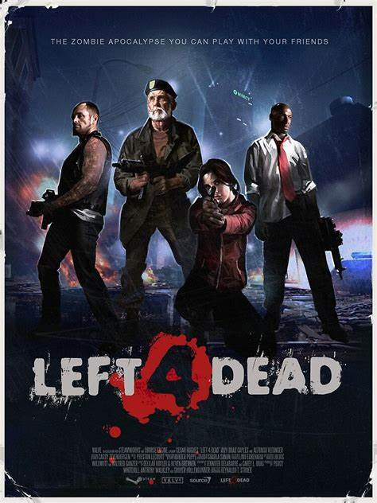
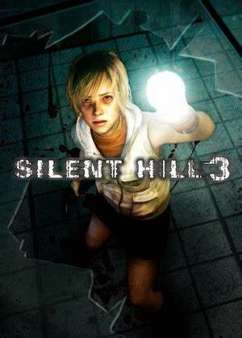
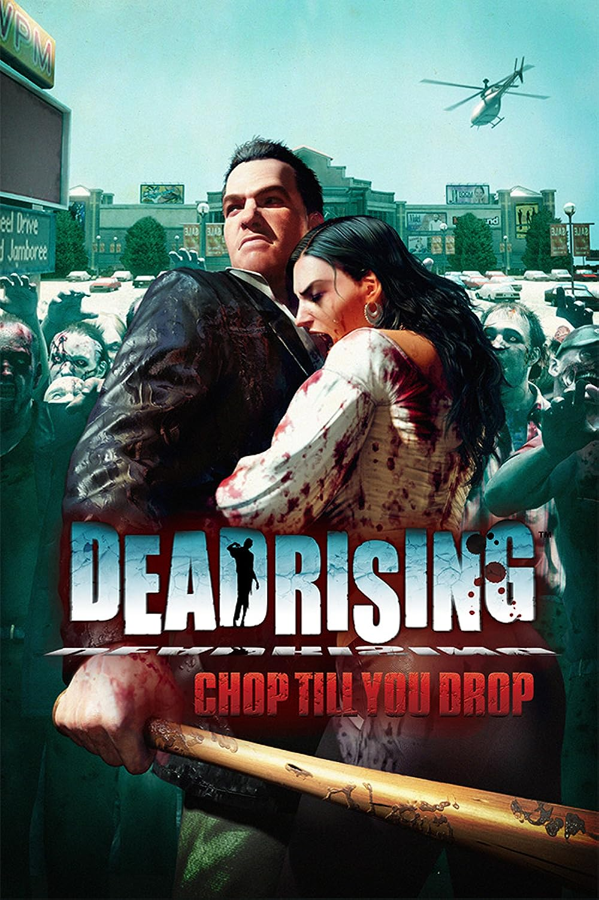
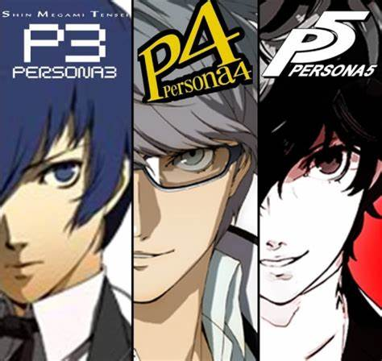
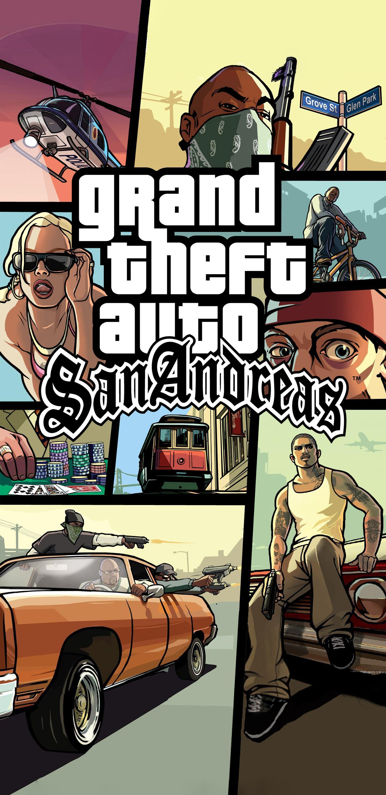

En esta pagina hablare un poco de mis gustos y pasatiempos
Son mi principal pasatiempo me encanta el hecho de poder experimentar un sin numero de historias y sucesos dede la comodidad del hogar tengo un gusto pricipal por los juegos con una tematica de horror y accion algunos juegos de estos generos son:
|  |  |
Left 4 dead Es un juego donde tomas el papel de un grupo de supervivientes el cual debe sobrevivir a ordas de zombies para poder escapar de la ciudad
Alan wake Es un juego donde tomas el papel de un escritor el cual debe enfrentarse a una obra de su autoria que no recuerda haber escrito para poder reencontrarse con su esposa
Silent hill(saga) Es una saga de juegos donde por diversos motivos los protagonistas terminan en el puelo de silent hill el cual causara que se enfrenten a un sin fin de pesadillas para escapar
Lo que me gusta de este tipo de juegos es el enfacis marcado en la historia y como estos preparan la admosfera para dar miedo aunque el horror no es mi unico genero que es de mi agrado tambien me gustan los juegos de accion, RPG y mundo abierto
|  |  |  |
Un ejemplo de los juegos de accion seria la saga dead rising la cual se centra en escapar de diversas zonas infestadas de zombies y psicopatas rescatando la mayor cantidad de gente posible pasando a los RPG un ejemplo de estos seria la saga de persona por lo general los juegos de este genero son de fantasia con una larga duracion con un sistema de combate por turnos me gusta este tipo de juegos por las historias que pueden contar y por untimo estan los mundo abierto los cuales dan una total libertad al jugador para hacer lo que quiera un ejemplo es la saga GTA que da al jugador competa libertad en las ciudades que ofrece